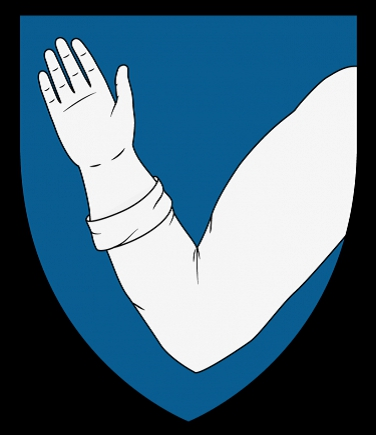

Väpnare.
omkring 1420. [1]
efter 1474. [1]
Henrik Tavast (sannolikt son av Nils Tavast). Företrädde 1453 jämte Jöns Tavast vid arvskiftet efter Nils Tavast dennes döttrar Elin och Katarina. Var närvarande, då Katarinas son Jeppe Fincke avyttrade gods 1456 och då Elin donerade gods 1465. Ägde jord i S:t Karins och S:t Marie sn:ar i Egentliga Finland. Dog tidigast 1474. Gifte sig mellan 1446 och 1453 med Johanna Bengtsdotter (Djäkn, Lydekasönemas ätt), som levde ännu 1466, ägde gods i S:t Marie sn i Egentliga Finland och i Birkala sn i Övre Sata-kunda och tidigare varit gift med Jöns Rengonpoika och Henrik Görtzhagen. Henrik Tavast uppges ha varit gift ytterligare två gånger, och den ena av dessa hustrur skall ha hetat Anna.